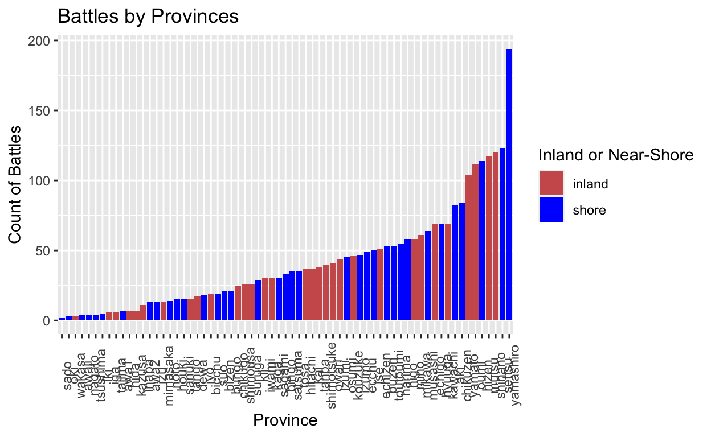
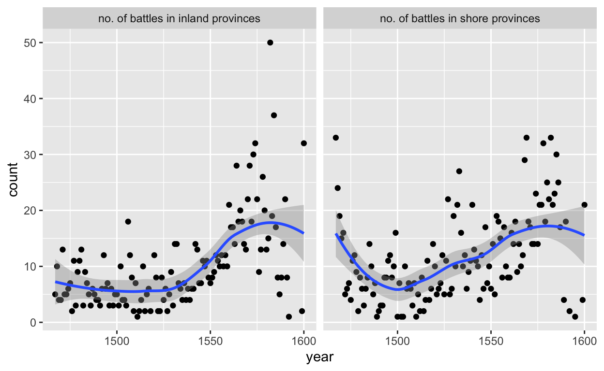

12/12
I use the data from this study:
Nicholas D. Anderson, “Introducing the Warring States Japan Battle Data,” International Interactions, Latest articles (2022) https://doi.org/10.1080/03050629.2023.2149514
My key research question is: How did geographic features and recent conflicts in adjacent provinces influence battle strategies and outcomes in Japan’s Warring States period?
My hypothesis is that provinces’ geographic characteristics (terrain ruggedness, purely inland or near shore, adjacency to recently conflicted areas), could have influenced strategies (use of cavalries) and outcomes of battles (number of casualties).
This is important as it provides insights into how geography and regional conflict dynamics influenced historical warfare.
My study is cross-sectional, as it analyzes data collected from a specific point in time (1467 - 1600) without manipulating the environment or provide any intervention or treatment across time. I assume this is typical in the field of history, especially for scholars dealing with pre-modern historical data.
I am combining three datasets collected by the same scholar in his research to conduct my regressions. These are the pre-existing variables I am going to mainly look at.
| Name | Description |
|---|---|
battle |
binary variable, 1 indicating the occurence of a battle |
adjacent_battle |
binary variable, whether there had been a recent battle in adjacent provinces |
province_name |
name of the province where the battle took place. |
area |
area of the province |
terrain_ruggedness |
the terrain ruggedness of the province |
forcesA forcesB |
the forces of side A or B that participated in the battle |
casualtiesA casualtiesB |
the casualties on side A or B |
coalitionA coalitionB |
whether side A or B formed coalition with others |
neighbor |
number of neighboring provinces |
naval |
whether the battle was a naval battle |
siege |
whether the battle was a siege |
year |
The year in which the battle observation was initiated |
library(tidyverse)
library(broom)
library(infer)
library(readr)
rm(warstate)
battledata <- read_csv("~/Desktop/harvard/GOV50/final project potential dataset/WSJBData/WarringStatesJapan_battledataV1.csv")
# View(WarringStatesJapan_battledataV1)
dyadic_data <- read_csv("~/Desktop/harvard/GOV50/final project potential dataset/WSJBData/WarringStatesJapan_diffusiondata_dyadic.csv")
monadic_data<- read_csv("~/Desktop/harvard/GOV50/final project potential dataset/WSJBData/WarringStatesJapan_diffusiondata_monadic.csv")
battledata <- rename(battledata, province_name = province)
warringstate <- merge(battledata, monadic_data, by.x = c('year', 'province_name'), by.y = c('year', 'province'), all.x = TRUE)I loaded the data and joined the three datasets into one. Now, let’s begin.
First, let’s look at the data.
We can see that there are 2889 unique battle_id, which means in total there were 2889 unique battles that took place during Japan’s Warring-States period, according to this dataset.
However, once we join the datasets for a comprehensive view, there appears 6875 lines of observations. This is because for some battles, there are different historically noteworthy leaders on either side, so the author decides to repeat the battle objects to include all the leaders’ names.
For my purpose, the names of these leaders do not really matter. Therefore, I will drop the names to keep one entry for each battle. I will also do several other column dropping to make the data more workable, specifically the day of battle, the month, the source of information.
Now we have a data set with 2889 unique battles!
Now, let’s look at the data again, and try to figure out what is going on in Japan during this time.
Because this is historical data, it is very non-exhaustive (with many NAs) and sometimes vague (estimated or ranged numbers). Such is the limitation of digital humanities (or, if you count history as social sciences, you should be having a hard time understanding the reality of data availability after GOV50 as I am now).
Therefore, we need to first look at the data, do some cleaning (I am converting several variables into binary variables), before attempting at any regression.
Descriptive: Getting familiar with Japan’s Warring State Battles
I am now interested about whether battles took place more often in purely inland provinces or near-shore provinces.
I am curious about this because of Japan’s geographical feature as an archipelago. I therefore wonder if we can see a significant difference in the total number of conflicts taking place in purely inland locations versus near shore provinces, even if not naval battles.
#I am defining inland and near shore provinces according to the Japanese version of the Warring-state Japan map, accessed through https://sengokumap.net/province-map/province-map/
near_shore_provinces <- c("yamashiro", "ise", "harima", "hizen", "kii", "settsu", "bizen", "aki", "chikuzen", "bingo", "buzen", "nagato", "suo", "awa1", "izu", "tsushima", "izumo", "iki", "musashi", "toutoumi", "osumi", "satsuma", "sagami","tosa", "houki", "ecchu", "higo", "hyuuga", "sanuki", "bungo", "iyo", "oki", "noto", "awa2", "awaji", "sado")
inland_provinces <- c("yamato", "tanba", "shinano", "mimasaka", "oumi", "tajima", "kaga", "kawachi", "mino", "owari", "echizen", "kai", "tango", "bicchu", "mutsu", "shimotsuke", "izumi", "shimousa", "kazusa", "kouzuke", "chikugo", "inaba", "hitachi", "echigo", "mikawa", "iga", "wakasa", "dewa", "iwami", "hida", "suruga")
#create new variables
warringstate <- warringstate |>
mutate(
geography = case_when(
province_name %in% inland_provinces ~ "inland",
province_name %in% near_shore_provinces ~ "shore"),
battle_geography = if_else(naval == 1, "Naval Battle", "Land Battle"),
naval = as.factor(naval))Where did most of the battles take place?
tb_most_battle_provinces <-
warringstate|>
group_by(province_name) |>
drop_na(province_name) |>
summarise(count = n()) |>
top_n(10, count) |>
arrange(desc(count))
knitr::kable(tb_most_battle_provinces, caption = "provinces where the most battles took place")| province_name | count |
|---|---|
| yamashiro | 194 |
| settsu | 123 |
| shinano | 120 |
| mutsu | 117 |
| hizen | 114 |
| oumi | 112 |
| yamato | 104 |
| chikuzen | 84 |
| aki | 82 |
| echigo | 69 |
| hyuuga | 69 |
| kawachi | 69 |
plot_provinces <- warringstate |>
drop_na(province_name) |>
group_by(province_name, geography) |>
summarise(count = n()) |>
arrange(desc(count)) |>
ggplot(aes(x = reorder(province_name, count), y = count, fill = geography)) +
geom_bar(stat = "identity", binwidth = 1) +
labs(x = "Province", y = "Count of Battles", fill = "Inland or Near-Shore", title = "Battles by Provinces") +
theme(axis.text.x = element_text(angle = 90, hjust = 0.5))
plot_provinces
#count the total number of battles in inland provinces and shore provinces
tb_inlandshore <- warringstate |>
group_by(geography) |>
count() |>
drop_na()
knitr::kable(tb_inlandshore, caption = "no. of battles in inland vs shore provinces")| geography | n |
|---|---|
| inland | 1285 |
| shore | 1480 |
#plot the number of battles in inland provinces and shore provinces over years
landshore_plot <- warringstate |>
mutate(shore = if_else(geography == "shore", 1, 0)) |>
filter(!is.na(shore)) |>
group_by(year, shore) |>
summarize(count = n(), .groups = 'drop') |>
ggplot(aes(x = year, y = count)) +
geom_point() +
geom_smooth(na.rm = FALSE) +
facet_wrap(~ shore, labeller = as_labeller(c('0' = 'no. of battles in inland provinces', '1' = 'no. of battles in shore provinces')))
landshore_plot
Analysis:
We see a significant rise in numbers of battles after the 1550s, and the number of battles peaking at around 1580s, both in inland provinces and shore provinces.
We also see a much higher number of shore-province battles in the beginning of the warring state period, which may be an indicator that by then, these battles were not so politically charged but simply out of necessity–for resources, which, in the case of premodern Japan, mostly came from the sea.
It may also be reflect the development of warring technologies from the 1467s to the 1500s, which results in a proportional rise in inland battles.
Side Note: I decided to not use the area plot to demonstrate the proportions because there are 124 battles which took place in provinces unknown (aka, geography = NA). Although the number is comparatively small, and should not significantly impact the general trends as shown here in these smoothed-lines, they do play a role if I were to make an area plot with the y-axis being 1.
Let’s look at the dataset and see how to extract the information whether a battle has cavalry involved.
forces_data_type <- unique(c(warringstate$forcesA, warringstate$forcesB)) |>
head()
knitr::kable(forces_data_type, caption = "Examples of Types of Forces Data")| x |
|---|
| NA |
| 10,000 cavalry |
| 200 |
| 500 cavalry |
| 300 |
| 3,000 cavalry |
We can see that the forces variables (forcesA and forcesB) are categorical, and consist of a myriad of information.
Since we are most interested in those that has “cavalry” involved here, I use the “str_detect” function to create a new variable cavalry denoting whether a battle has cavalry involved, as well as cavalryA, whether side A has cavalry, and cavalryB, whether side B uses cavalry.
#extracting information about cavalry involved
warringstate <- warringstate |>
mutate(cavalryA = if_else(str_detect(forcesA, "cavalry"), 1, 0),
cavalryB = if_else(str_detect(forcesB, "cavalry"), 1, 0),
cavalry = if_else(cavalryA == 1|cavalryB == 1, 1, 0))
#counting the number of cavalry involved battles in total
cavalrytotal <- warringstate |>
count(cavalry == 1)
knitr::kable(cavalrytotal, caption = "Cavalry Involvement (TRUE = No. of Cavalry-involved Battle)")| cavalry == 1 | n |
|---|---|
| FALSE | 59 |
| TRUE | 23 |
| NA | 2807 |
#plotting the number of cavalry battles over years
cavalry_battle <- warringstate |>
filter(cavalry == 1) |>
group_by(year)|>
summarize(count = n()) |>
ggplot(aes(x = year, y = count))+
geom_point() +
geom_smooth(na.rm = FALSE) +
labs(
title = "Number of Cavalry Battles over Years",
x = "Year",
y = "No. of Cavalry Battles"
)
#proportion of cavalry-involved battle each year
total_prop_cavalry <- warringstate |>
group_by(year) |>
summarize(
total_battles = n(),
cavalry_battles = sum(cavalry, na.rm = TRUE),
proportion_cavalry = cavalry_battles / total_battles
) |>
filter(proportion_cavalry > 0)
total_prop_cavalry_plot <-
ggplot(total_prop_cavalry, aes(x = year, y = proportion_cavalry)) +
geom_point() + geom_smooth() +
scale_y_log10() +
labs(
title = "Proportion of Cavalry Battles Over Years",
x = "Year",
y = "Proportion of Cavalry Battles"
)Analysis:
The proportion of cavalry battles is so small over all recorded years, which makes me less confident to interpret the first “number of cavalry battles over years” plot as precisely representative of the history.
The smooth line in the proportion plot is indicative of the general trend of cavalry use over the years. The observation of the sharp rise in cavalry proportion from the 1467s to the 1500s, matches with our assumption that the rise in cavalry may be correlated to the rise in land battle proportion among all battles. Nevertheless, we must realize that most of the battles recorded here, we simply DON’T KNOW whether they had cavalries involved or not. This is a fundamental limitation to half of my research question.
Regression
#Cavalry and recent battle with adjacent province
Here I look at the usage of cavalry’s relationship to the geographical features of a battlefield (terrain ruggedness, shore or inland), and whether there had been recent battle with adjacent provinces, holding constant confounders such as year, and the number of neighbors (how many neighboring provinces was this province adjacent to.)
In his paper, Anderson explains, “adjacent_battle simply indicates whether a province sharing a land border with a given province experienced conflict within the past 24 months; road_battle adds the condition that this adjacent province also shares a major road with the province in question.” (Anderson, 7) Since adjacent_battle would always include all road_battles, I am not so concerned about road battles here.
geography, is a two-level categorical variable.
When calculated in the regression model, R is helping me converting it into a binary, dummy variable.
As you can identify from the printed regression outputs, it is calculated based on the assumption that shore = 1, and inland = 0.
lm_cavalry1 <-
lm(cavalry ~ terrain_ruggedness + geography, data = warringstate)
tidy(lm_cavalry1) |>
knitr::kable(digits = 3)| term | estimate | std.error | statistic | p.value |
|---|---|---|---|---|
| (Intercept) | 0.267 | 0.165 | 1.621 | 0.109 |
| terrain_ruggedness | -0.001 | 0.001 | -0.902 | 0.370 |
| geographyshore | 0.221 | 0.103 | 2.154 | 0.034 |
summary(lm_cavalry1)
Call:
lm(formula = cavalry ~ terrain_ruggedness + geography, data = warringstate)
Residuals:
Min 1Q Median 3Q Max
-0.3866 -0.3591 -0.1616 0.5969 0.8743
Coefficients:
Estimate Std. Error t value Pr(>|t|)
(Intercept) 0.2667241 0.1645314 1.621 0.1091
terrain_ruggedness -0.0007686 0.0008520 -0.902 0.3698
geographyshore 0.2211681 0.1026634 2.154 0.0343 *
---
Signif. codes: 0 '***' 0.001 '**' 0.01 '*' 0.05 '.' 0.1 ' ' 1
Residual standard error: 0.4404 on 77 degrees of freedom
(2809 observations deleted due to missingness)
Multiple R-squared: 0.06348, Adjusted R-squared: 0.03916
F-statistic: 2.61 on 2 and 77 DF, p-value: 0.08005Analysis:
The positive intercept coefficient is neither significant statistically (p = 0.109) nor in reality, as it shows the baseline of cavalry presence, which is not interesting with our limited and particularly historically-concerned data.
The coefficient -0.001 of variable terrain_ruggedness suggests that, holding constant the other geographical feature (shore or inland), the increase in the land’s ruggedness is associated with to an extremely slight decrease in the likelihood of cavalry use.
However, this is not statistically significant (p = 0.370), meaning that we can’t confidently infer this correlation.
The positive coefficient 0.221 of geography suggests that, holding constant the terrain ruggedness, the shore provinces is associated with a slight higher likelihood of cavalry use.
lm_cavalry2 <-
lm(cavalry ~ adjacent_battle + year + neighbors, data = warringstate)
tidy(lm_cavalry2) |>
knitr::kable(digits = 3)| term | estimate | std.error | statistic | p.value |
|---|---|---|---|---|
| (Intercept) | 7.029 | 2.508 | 2.802 | 0.006 |
| adjacent_battle | -0.055 | 0.168 | -0.327 | 0.745 |
| year | -0.004 | 0.002 | -2.551 | 0.013 |
| neighbors | -0.045 | 0.032 | -1.392 | 0.168 |
summary(lm_cavalry2)
Call:
lm(formula = cavalry ~ adjacent_battle + year + neighbors, data = warringstate)
Residuals:
Min 1Q Median 3Q Max
-0.5780 -0.2493 -0.1867 0.2702 0.9701
Coefficients:
Estimate Std. Error t value Pr(>|t|)
(Intercept) 7.028512 2.508153 2.802 0.00643 **
adjacent_battle -0.054860 0.167795 -0.327 0.74461
year -0.004171 0.001635 -2.551 0.01274 *
neighbors -0.045036 0.032354 -1.392 0.16799
---
Signif. codes: 0 '***' 0.001 '**' 0.01 '*' 0.05 '.' 0.1 ' ' 1
Residual standard error: 0.4237 on 76 degrees of freedom
(2809 observations deleted due to missingness)
Multiple R-squared: 0.1445, Adjusted R-squared: 0.1107
F-statistic: 4.279 on 3 and 76 DF, p-value: 0.007602Analysis:
The positive intercept coefficient (7.029) suggests a baseline presence of cavalry in battles, which is statistically significant (p = 0.006), but not meaningful or interesting in reality.
The negative coefficient -0.055 of variable adjacent_battle suggests that, holding constant the time (year) and the number of adjacent provinces (neighbors), the existence of a recent battle in adjacent provinces is associated to a slight decrease in the likelihood of cavalry use in a current battle. However, this is not statistically significant (p = 0.745), meaning that we can’t confidently infer this correlation.
This suggests that over time, the presence of cavalry in battles decreased, but there is no strong evidence from this model to suggest that the presence of cavalry is influenced by conflicts in neighboring provinces or the number of neighboring provinces.
#Whether victory of either side (I will do the same test for both Victory A and Victory B) is correlated to the use of cavalry in the battle, holding constanct whether either side is joined by coalition, and who initiated the fight.
victory_a <- lm(victoryA ~ cavalryA + cavalryB + coalitionA + coalitionB, data = warringstate)
victory_b <- lm(victoryB ~ cavalryB + cavalryA + coalitionB + coalitionA, data = warringstate)
tidy(victory_a) |>
knitr::kable(digits = 3, title = "VictoryA")| term | estimate | std.error | statistic | p.value |
|---|---|---|---|---|
| (Intercept) | 0.695 | 0.112 | 6.182 | 0.000 |
| cavalryA | 0.063 | 0.206 | 0.306 | 0.761 |
| cavalryB | -0.021 | 0.277 | -0.076 | 0.939 |
| coalitionA | 0.179 | 0.125 | 1.430 | 0.158 |
| coalitionB | -0.221 | 0.120 | -1.841 | 0.071 |
summary(victory_a)
Call:
lm(formula = victoryA ~ cavalryA + cavalryB + coalitionA + coalitionB,
data = warringstate)
Residuals:
Min 1Q Median 3Q Max
-0.8742 -0.4735 0.1258 0.3473 0.5265
Coefficients:
Estimate Std. Error t value Pr(>|t|)
(Intercept) 0.69491 0.11240 6.182 8.16e-08 ***
cavalryA 0.06315 0.20637 0.306 0.7607
cavalryB -0.02119 0.27697 -0.076 0.9393
coalitionA 0.17927 0.12535 1.430 0.1583
coalitionB -0.22143 0.12030 -1.841 0.0711 .
---
Signif. codes: 0 '***' 0.001 '**' 0.01 '*' 0.05 '.' 0.1 ' ' 1
Residual standard error: 0.4586 on 55 degrees of freedom
(2829 observations deleted due to missingness)
Multiple R-squared: 0.08177, Adjusted R-squared: 0.01499
F-statistic: 1.224 on 4 and 55 DF, p-value: 0.3111| term | estimate | std.error | statistic | p.value |
|---|---|---|---|---|
| (Intercept) | 0.310 | 0.104 | 2.978 | 0.004 |
| cavalryB | 0.075 | 0.257 | 0.294 | 0.770 |
| cavalryA | -0.033 | 0.191 | -0.171 | 0.865 |
| coalitionB | 0.192 | 0.112 | 1.719 | 0.091 |
| coalitionA | -0.254 | 0.116 | -2.187 | 0.033 |
summary(victory_b)
Call:
lm(formula = victoryB ~ cavalryB + cavalryA + coalitionB + coalitionA,
data = warringstate)
Residuals:
Min 1Q Median 3Q Max
-0.5449 -0.2636 -0.1357 0.1069 0.9438
Coefficients:
Estimate Std. Error t value Pr(>|t|)
(Intercept) 0.31034 0.10420 2.978 0.0043 **
cavalryB 0.07549 0.25675 0.294 0.7699
cavalryA -0.03271 0.19130 -0.171 0.8649
coalitionB 0.19174 0.11152 1.719 0.0912 .
coalitionA -0.25414 0.11620 -2.187 0.0330 *
---
Signif. codes: 0 '***' 0.001 '**' 0.01 '*' 0.05 '.' 0.1 ' ' 1
Residual standard error: 0.4252 on 55 degrees of freedom
(2829 observations deleted due to missingness)
Multiple R-squared: 0.1163, Adjusted R-squared: 0.05198
F-statistic: 1.809 on 4 and 55 DF, p-value: 0.1403Analysis:
The intercept is significant in both models, indicating the base probability of victory when all other variables are zero, which is not very meaningful, as the divide between who is recorded as side A and who is side B, is purely arbitrary.
For victory_a, none of the variables are statistically significant at the conventional 0.05 p-level, suggesting that neither the use of cavalry by either side nor the presence of a coalition has a statistically significant correlation with victory for side A.
For victory_b, only coalitionA has a statistically significant negative coefficient (-0.254) at the 0.05 level, indicating that when side A is joined by a coalition (holding constant whether side B is joined by a coalition and whether either side uses cavalry), it is correlated with a decrease in the probability of victory for side B.
Other coefficients in both models are not statistically significant, implying no clear evidence of their influence on the probability of victory given the data provided.
We must, again, emphasize the limitation of our data: we only have a tiny number of battles with recorded cavalry usage and coalitions. All others are NAs.
#Whether the number of total casualties is correlated to the geographical features of a battlefield. (Note that this result is not so reliable, because there is missing data of casualties for battles on either or both sides, and also I am cleaning the data further.)
casualties_data_type <- unique(c(warringstate$casualtiesA, warringstate$casualtiesB)) |> head()
knitr::kable(casualties_data_type, caption = "Examples of Types of Casualties data")| x |
|---|
| NA |
| 10s |
| 400 (both sides) |
| 300 |
| 100s |
| 100 |
Now, I need to do some data cleaning, and make them into one numerical variable accounting for the total number of casualties: total_casualties.
For ranged numbers, I will reassign them the approximate middle of their range.
For vague numbers (such as “100s”), I will assume it to be a translation from Japanese sources which usually denotes “around 100”, and take the liberty to assign them a number I find sense-making as someone who studies Japanese history.
#recoding casualtiesA into `ca_recode`, casualtiesB into `cb_recode`, and the sum casualties into `sum_casualties`
warringstate <-
warringstate |>
mutate(
ca_recode = case_when(
casualtiesA == "10s" ~ 15,
casualtiesA == "100s" ~ 150,
casualtiesA == "100s (both sides)" ~ 300,
casualtiesA == "1,000s" ~ 1500,
casualtiesA == "18 injured" ~ 18,
casualtiesA == "60~80" ~ 70,
casualtiesA == "2,000 (both sides)j" ~ 4000,
casualtiesA == "700~800" ~ 750,
casualtiesA == "400 (both sides)" ~ 800,
str_detect(casualtiesA, "^[0-9]+$") ~ as.numeric(casualtiesA),
TRUE ~ NA_real_
),
cb_recode = case_when(
casualtiesB == "10s" ~ 15,
casualtiesB == "400 (both sides)" ~ 800,
casualtiesB == "470~570" ~ 520,
casualtiesB == "10s~500" ~ 255,
casualtiesB == "300~500" ~ 400,
casualtiesB == "100+" ~ 125,
casualtiesB == "191~500" ~ 345,
casualtiesB == "100s" ~ 150,
casualtiesB == "7,000~8,000" ~ 7500,
casualtiesB == "2,000~3,000" ~ 2500,
casualtiesB == "700~800" ~ 750,
casualtiesB == "30,000~40,000" ~ 35000,
casualtiesB == "10s ships" ~ 300,
casualtiesB == "1,000s or 10,000" ~ NA_real_,
casualtiesB == "100s (both sides)" ~ 300,
casualtiesB == "1000s" ~ 1500,
casualtiesB == "18 injured" ~ 18,
casualtiesB == "60~80" ~ 70,
casualtiesB == "2,000 (both sides)j" ~ 4000,
str_detect(casualtiesB, "^[0-9]+$") ~ as.numeric(casualtiesA),
TRUE ~ NA_real_
),
sum_casualties = case_when(
is.na(ca_recode) & is.na(cb_recode) ~ NA_real_,
is.na(ca_recode) ~ cb_recode,
is.na(cb_recode) ~ ca_recode,
TRUE ~ ca_recode + cb_recode
)
)Now we have finished the recoding, we can weave together a regression.
I aim to look at whether the number of total casualties is correlated to the geographical features of where the battle take place: how rugged was the land, and whether there had been wars in adjacent provinces recently, and the geography (inland or near-shore) of the battle location.
lm_casualties <-
lm(sum_casualties ~ terrain_ruggedness + geography + adjacent_battle, data = warringstate)
summary(lm_casualties)
Call:
lm(formula = sum_casualties ~ terrain_ruggedness + geography +
adjacent_battle, data = warringstate)
Residuals:
Min 1Q Median 3Q Max
-3022 -2176 -796 -181 31982
Coefficients:
Estimate Std. Error t value Pr(>|t|)
(Intercept) 2199.580 3474.805 0.633 0.529
terrain_ruggedness 1.563 8.910 0.175 0.861
geographyshore -1925.768 1417.863 -1.358 0.180
adjacent_battle 391.376 2232.552 0.175 0.861
Residual standard error: 4889 on 54 degrees of freedom
(2831 observations deleted due to missingness)
Multiple R-squared: 0.04553, Adjusted R-squared: -0.0075
F-statistic: 0.8586 on 3 and 54 DF, p-value: 0.4682| term | estimate | std.error | statistic | p.value |
|---|---|---|---|---|
| (Intercept) | 2199.580 | 3474.805 | 0.633 | 0.529 |
| terrain_ruggedness | 1.563 | 8.910 | 0.175 | 0.861 |
| geographyshore | -1925.768 | 1417.863 | -1.358 | 0.180 |
| adjacent_battle | 391.376 | 2232.552 | 0.175 | 0.861 |
Analysis & Interpretation:
Again, just like what happened in the lm model for victory_a, none of the variables of battlefield geographical features I am looking at hear, is statistically significant at the 0.05 p-level.
The coefficient of 1.563 for terrain ruggedness, suggests a slight increase in total casualties is correlated to more rugged terrain. But the p-value of 0.861 indicates this is not statistically significant.
The coefficient of -1925.768 for geography (shore) suggests that battles taking places in provinces near the shore may be associated with fewer casualties compared to inland battles, but again, with a high p-value of 0.180, this is not statistically significant.
The coefficient of 391.376 for variable adjacent_battle indicates a possible increase in casualties associated with recent battles in adjacent provinces, but the p-value of 0.861 indicates no statistical significance.
These suggest that, unfortunately, we cannot find clear evidence from our limited data that these geographical features have a statistically significant correlation with the total number of casualties in the battles studied. Especially, with vague data from historical documents being further abstracted for the purpose of calculation (which is what I did during data cleaning), makes these outcomes less meaningful and trustworthy. The field of digital humanities is filled with unprocessed data, many of which is vague in nature and unable to be checked in the near future. However, statistical thinking, I believe, should still be more valued when doing historical analysis and interpretations.